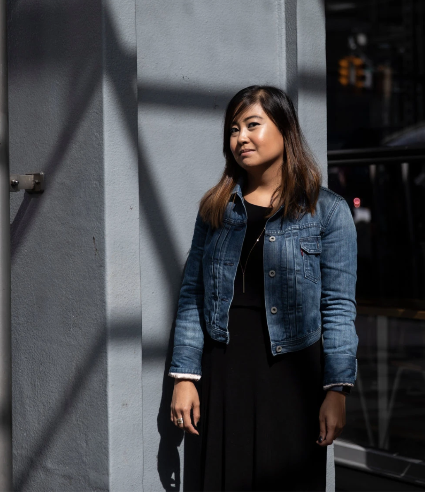

Technology Reporter for Bloomberg News

I’m a technology reporter for Bloomberg, based in New York City. I cover Big Tech and its power in all its forms.
I combine documents, sources and data analysis to show how decisions made inside tech companies affect people’s lives and the democratic process. Recently, that’s meant investigating how Google user data became a police shortcut, how right-wing YouTubers helped push young men toward Trump in 2024, how Elon Musk used X to spread anti-immigrant conspiracies, and how OpenAI’s GPT showed racial bias against job seekers.
Most recently, I was a reporter for The New York Times, where I covered online disinformation and its global harms. Before that, I was a senior reporter at BuzzFeed News, where I wrote about artificial intelligence and tech’s invasive effects on people and communities. And a few years ago, I worked as a reporter for WIRED in Silicon Valley.
In 2019 I won a Livingston Award for excellence in international reporting for my piece, “How Duterte Used Facebook To Fuel the Philippine Drug War.” I also won a 2019 Mirror Award in the special topic category, Best Story on Journalism in Peril, for the same feature. In 2020, I and several of my Times colleagues won an honorable mention at the SABEW Awards for our stories exploring the information ecosystem’s growing dark side. In 2023, I and my Bloomberg colleagues won an Online Journalism Award and a Deadline Club Award for our reporting on the post-Roe information crisis, and we were shortlisted for a Sigma Award and named SABEW finalists in the investigations category. Our investigation into bias in generative AI was part of Bloomberg’s 2024 Online Journalism Award–winning entry for technology reporting, and our work on how social media set the stage for right-wing political victories was a 2025 Online Journalism Awards finalist.
I’ve spoken publicly about my work at Oxford University during the Blavatnik School of Government’s “Challenges of Government” 2018 Conference, and at the University of Florida, where I was the Science Journalist in Residence for Spring 2019.
I studied science writing at Columbia University, and grew up in Manila, Philippines. Today I live in Brooklyn, New York, with my two cats, Laser Beam and Vivienne.
Feel free to browse my site for a selection of some of my recent work.